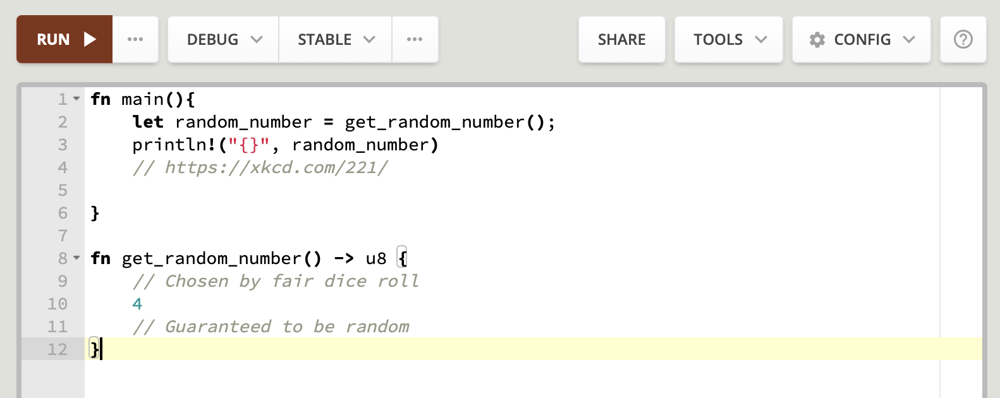
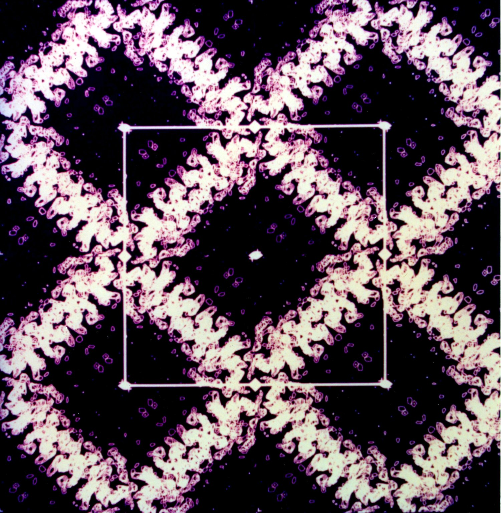
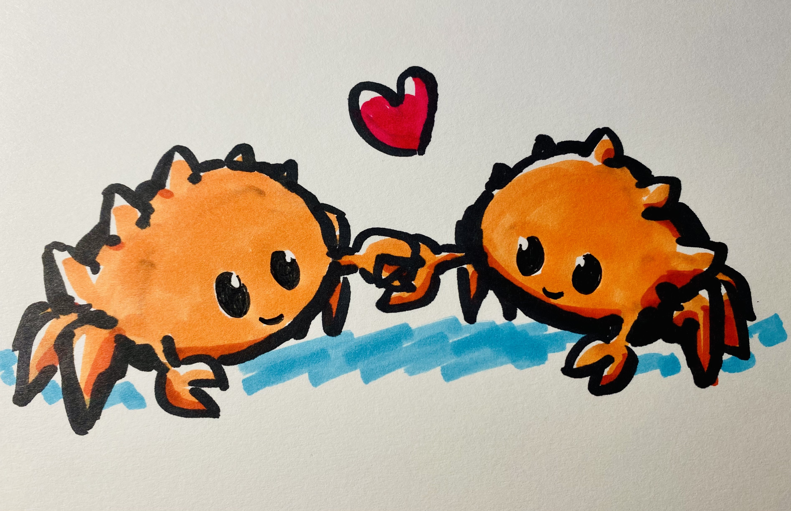
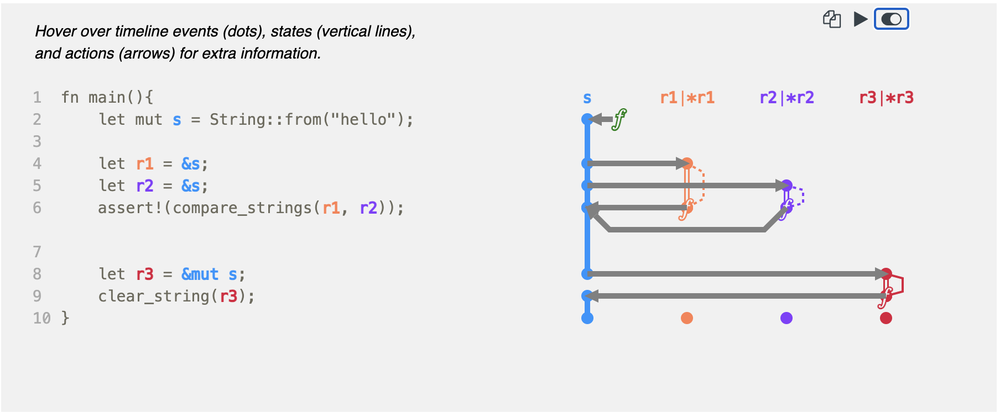
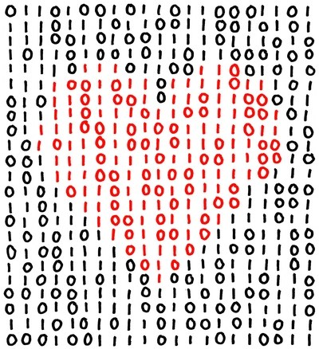
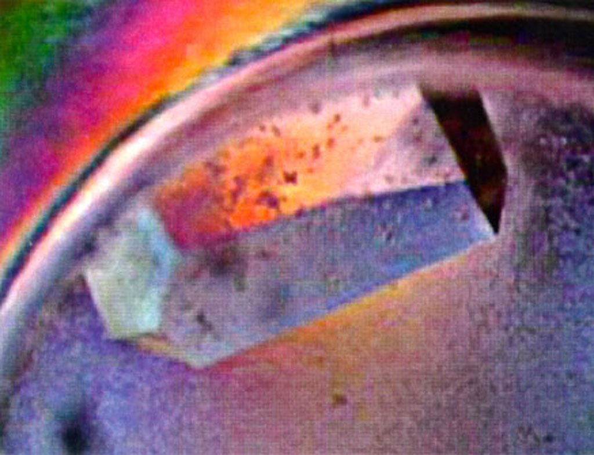
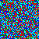

Introduction
 Amaryllis hybrid, London Horticulture Society
Amaryllis hybrid, London Horticulture Society
Hello user! You've found the book of bioinformatics in Rust. If you're a total beginner to anything bioinformatics, Rust, or programming, then this is the book for you. I hope it captures your interest like biology captured mine!
If you want to reach me or have something you want added to the book, find me on github or let me know here!
Background: Binary vs Library
When we get a program, we click it, it opens, and we'll be able to do stuff. We'll have to choose the program based on our operating system.
The program we're downloading is most likely a compiled program. This program is executable by the specific operating system we're using. The program has system-specific operations amalgamated together so the computer can do the things we want it to in an efficient manner. In Rust, we create these kinds of programs by telling Rust to make a binary file (e.g. an executable). You may have heard this word before on Windows as the .exe file type or just plain no file extension in Ubuntu or Linux. In Rust, we can make all of these file types really easily!
Binaries always have a main function, written fn main(){}. This main function is the Steve Jobs (or Woz) of all things in our binary. Everything that will actually be done is in the main function, with other functions, definitions, etc. being sourced from everywhere else. We build binaries by typing cargo build --bin.
The other kind of thing we make in Rust is a library. While we also build a library with cargo build --lib, a library does not have a program that we can just run like what we would imagine. This is because a library's purpose is to be a bunch of small, reusable pieces of code that we can use to make an executable, but aren't really useful to our users. As an analogy, a library is like a tool shed and the binary a car that the user drives.
Setup
We'll be building binaries in this book on the Rust playground, a website where everything is already set up for us; ! Each of the exercises will have a link to the playground with the exercise we're working on, it's that easy!

Getting started in Rust is as simple as opening a webpage!
Ready Go
Instead of going into a lot of detail, let's just start doing things!
fn main(){
// This is a comment in a function!
}
Comments don't do anything in code because of the two // marks before the text and can be put anywhere
We need comments to let people know what we're doing in between code, and we'll use them to talk to you throughout code tutorials
Our comment is in the main function, e.g. fn main(){}, specifying we're making a binary.
 Electron density projection of human serum albumin protein taken by NASA. Even complicated biological things are made of smaller, simpler things!
Add, Subtract, Multiply, Divide
fn main(){
// Make a variable a that holds 1
let a = 1;
// Make a variable b that holds 2
let b = 2;
// Add them together to get c
let c = a + b;
// Multiple by 3!
let d = c * 3;
// Divide by 3!
let e = d / 3;
// The variable e holds 3
}
Each line is separated by a semicolon, letting our program know to keep going. If there isn't a semicolon at the end of a line, return the result of that line. For more information: Semicolons
Print Numbers
Let's print something!
fn main(){
println!("42")
}
Well that was pretty easy, we didn't even need the semicolon because we end the main function after printing. Now instead of printing directly, let's try printing something in a variable.
fn main(){
// Make a variable x that holds 42
let x = 42;
println!("{}", x)
}
Now that we have a variable, println! takes two parts, the first is formatting the print, while the second part is the variable to print. the quotes surround everything that will be printed, in our case, {} which is always the input variable. In plain English, we've stated to print only the variable. We probably want to other things than just deal with numbers though, and we can do that by adding in the quotation marks:
fn main(){
// Make a variable x that holds 42
let x = 42;
println!("The magic number x is {}!", x)
// Prints "The magic number x is 42!"
}
Comparing Printing Strings
In interpreted languages, doing things is really short and succinct. Let's go with a classic: printing "Hello World!".
# In Python:
thing = "Hello World!"
print(thing)
# In R:
thing = "Hello World!"
print(thing)
// In Rust:
fn main(){
let thing = "Hello World!";
println!("{}", thing);
}
Why is it so much longer in Rust? With great power comes having to be specific! Let's break it down based on what we learned so far.
We're building a binary, which is why we have the main function, fn main(){}.
Inside the main function, we create a variable thing that stores "Hello World!" We put the thing variable into println!, where "{}" is just our variable, and the second input is the actual variable to be printed. We could also print something more fun like:
Our variable contains: Hello World!
by typing:
println!("Our variable contains: {}", thing);
Level Cleared!
Congratulations, you cleared level 2! It was a bunch of sections, but we learned some programming building blocks that we'll continue to use for the rest of our career. Time to take a break!

Functional MRI of a resting mouse brain, Zuckerman Institute Ma, Hillman et al.
Vectors
We made a string in the prior section, so let's make it's simpler cousin, the vector!
fn main(){
let thing_of_things = vec![1,2,3,4];
}
What is a vector exactly? A vector in Rust is a sequence of things, in our case the numbers 1,2,3,4 one after the other. This is also referred to as a composite type because a vector is made of multiple smaller things. We could also make the vector with the following:
fn main(){
let thing1 = 1;
let thing2 = 2;
let thing3 = 3;
let thing4 = 4;
let thing_of_things = vec![thing1,thing2,thing3,thing4];
}
Printing Vectors and Debug Mode
If you look closely, we didn't print the vector just yet, for that we need something called debug!
Debug is something new if you're coming from other languages like R or Python, and it's something that we don't really need to know how it works, so we'll just leave it at: We neeeeeeed it! At least for vectors.
fn main(){
let thing_of_things = vec![1,2,3,4];
println!("{:?}",thing_of_things)
}
Can you spot the debug notation? It's the :? inside the {}! Rust is super smart, if we didn't have the debug and just wrote println!("{}",thing_of_things) like in our prior examples, we'd get an error like this:
the trait std::fmt::Display is not implemented
But we'd also get this:
in format strings you may be able to use {:?} (or {:#?} for pretty-print) instead
The first option is exactly what we needed, which leads us to the golden rule: figure out the output Rust gives us. Rust is pretty smart, it'll probably give us some useful clues (and in this case the exact fix) to what to do if we get an error! It's a safe troubleshooting default if we get an error when printing to try add in the :?.
Dot Notation
In Rust and a few other programming languages, we can use dot notation. Dot notation is used when we have a thing and we want to do something with it. In pseudo programming English if I wanted to say:
"cut apple"
With dot notation it would look something like:
apple.cut();
where we have an apple and we want to cut it. Let's use dot notation with a vector!
fn main(){
// Make a vector holding the numbers 1,2,3,4
let vector = vec![1,2,3,4];
// Use dot notation with len(), a function to get the length of a vector
let length_of_vector = vector.len();
// Print the value stored in length_of_vector, which is the length of the vector
println!("{}",length_of_vector)
}
Congrats! We've not only used our first dot notation, our first function! It doesn't seem like it now, but len() is a workhorse for Rust programmers of all levels. Dot notation will help us be more concise and expressive in our programming. We want our programs (as) short and sweet (as possible).

Margaret Hamilton and software for Apollo. Dot notation saves us space (no pun intended). Thanks to early researchers, the world runs on computers! Credits: Wikipedia
Notes on Vectors
Vectors are used in Python and R as one of the main objects and it's no different in Rust, but Rust also has many alternatives that can make things faster and more efficient. If you're doing millions of calculations, any small bit counts! This is one of the great things about Rust: where other languages are limited, Rust doesn't have limits. We'll cover some of the features that make Rust much more powerful than the interpreted languages in the next chapter!

Rustaceans are super helpful and encouraging, joining the chats is one of the best ways to learn! Image credits: Karen Rustad Tölva
Rust chats:
For Loops
We now know that vectors are made of smaller pieces of data; what if we wanted to do something for each part (element) of our vector?
Each language has multiple ways to do something for each element of our vector. In any language, we could write a for or a while loop:
# Python
vector = [1,2,3,4]
for element in vector:
print(element)
# R
vector = c(1,2,3,4)
for (element in 1:length(vector)) {
print(element)
}
// Rust
fn main(){
let vector = vec![1,2,3,4];
for element in vector {
println!("{}", element);
}
}
References
Warning: Difficult Section! (Don't worry, we aren't going to use this yet)
References are one way to make code super efficient. The general idea is that we memorized some data, and instead of re-memorizing it we refer to it. In Python or R, we just have the data in a variable and that variable is copied over and over again whenever we want to use it. In most cases, we could have just made and memorized the data once and referred to it in the rest of the program.
In a metaphoric example, Rust makes a book (our data), stores it on a shelf, and whenever someone wants some information from the book, we let them know where the book is on the shelf rather than making a copy of the whole book. Making copies of a book in the real world is expensive; the same holds true in computation. On the other hand, our new method not only saves us the time of copying a whole book, but means we don't have to walk to the shelf ourselves, and lets us direct a revolving door of people that want books.
Ownership
Ownership and references are some of the defining and central ideas of the Rust language. Who else could explain it better than the language developers themselves?
The Rust Language Book:
A visualization we really liked is from Rustviz:
 Simple example of visualization of ownership and references.
Notes
We want to focus on doing things in bioinformatics, so from here we're going to link background information in the Rust books or this book's index for bioinformatics background. Next, making characters into numbers!

binary <3 by xkcd
Characters
Before we get into biological data, we first need to be able to give the computer knowledge of what an alphabet, or even a character is. Computers can only understand numbers, so how do we tell it we want alphabet characters? One way to do that is to choose a number for each character in some systematic way. One method could be instead of ABC we save 123 if we're using the location in the alphabet as our integer. Since we know the alphabet, we can store numbers and still know what the numbers are supposed to say, and convert back and forth between numbers and characters.
Most commonly, this is done with bytes. When your internet company's talking about speeds, megabits are different from megabytes (8 bits to a byte)! Each byte most commonly represents a character like A or T, but instead of A or T, it's a number. Since each number represents a character, we can write a word as a vector of numbers. In our first example of 'ABC', it would just be vec![1,2,3].
In practice, 'A' isn't stored as 1, but as '65' in the ASCII alphabet and '41' in UTF-8. This is to be useful to users and computers around the world; UTF-8 has a ton of stuff, even emojis!
References
I really enjoyed Stanford's bits and bytes section!
Biological Sequences
In this chapter, we're going to start working with biological data, finally!
DNA classically contains the four bases ACTG, whereas RNA includes ACUG. In sequencing data, we usually encode RNA data as ACTG for ease of use, and notate that the file is RNA data. We also commonly include 'N', where we're unsure of what base goes there but we think there's something there.
fn main(){
// DNA vector, RNA is commonly encoded the same way
let dna = b"ACTG".to_vec();
// DNA vector containing a base we're unsure of, but think it's present.
let dna_with_n = b"ACTNG".to_vec();

Crystallized Histone Octamer (2mm) DNA sequences are wrapped around proteins called histones. If put under the right pressure and temperature, these proteins can be made into crystals! Picture Credits: NASA, Dan Carter of New Century Pharmaceuticals
Biological Vector
In the previous section, we created a biological sequence and made it into a vector with to_vec().
We've created a vector of ACTG and that the vector doesn't hold characters, but bytes. Now that the computer has an idea of a biological sequence, we can start working with our biological data just like any other numeric vector! This includes things that we're more familiar with from math, and in this section we'll do something that we can only do once we've made our characters into numbers: find the sum! What's the sum of 'ACTG'? Let's find out!
fn main(){
let dna = b"ACT".to_vec();
let mut sum = 0;
for base in dna {
sum += base;
}
println!("{}", sum);
// Prints 216
}
Links:
The mut keyword: a mutable variable.
+= notation: Adding to a variable.
-= notation: Subtracting to a variable.
Definitions from the Rust language appendix:
+= Arithmetic addition and assignment, AddAssign
-= Arithmetic subtraction and assignment, SubAssign
Writing our first For loop: Rust by Example
Integer Overflow
In the last section, we summed the elements in a vector. If we did this directly in real programs, Rust would probably panic and say something along the lines of integer overflow, depending on our DNA sequence. This is because unsigned 8-bit integers can only hold a maximum value of 256, so if our sum was larger than 256, Rust wouldn't know what to do and panic. For example:
fn main(){
// Changed dna sequence from ACT to ACTG
let dna = b"ACTG".to_vec();
let mut sum = 0;
for base in dna {
sum += base;
}
println!("{}", sum);
// Rust returns an integer overflow error, sum is greater than 256
}
Don't worry though, we can fix that easily by converting our sum variable into an unsigned 64-bit integer (u64). The max number for this integer type: 18,446,744,073,709,551,615! This also means we need to change each element of the vector to a u64 (using the as keyword), as we can't add different types of integers.
fn main(){
let dna = b"ACTG".to_vec();
// We tell Rust that we want sum to equal 0, but 0 as a u64
let mut sum = 0u64;
for base in dna {
// convert each element (base) to u64 to add to sum (also u64)
sum += base as u64;
}
println!("{}", sum);
// Prints 287
}
Background
Converting between ('casting') numeric types with as
Check Sequence
Calculating the sum of a sequence is pretty cool, but probably isn't very useful to us in a direct sense. Let's do something with a little more direct application: checking if our sequence is a homopolymer!
There's a few steps we're going to do here:
- Store the first element of our sequence in a variable to compare to the other elements
- Create a separate vector where each element is a boolean true/false. Rust gives us a really nice macro (vec![]) to make an empty vector.
- For each element in our sequence, check if the element is the same as the first element and push the result into our boolean vector.
- Print our boolean vector to see our results!
fn main(){
let vector = b"AAAAA".to_vec();
let first_element = vector[0];
let mut boolean_vector: Vec<bool> = vec![];
// For each element, true or false: is the same as the first element
for element in vector {
boolean_vector.push(first_element == element)
}
println!("{:?}", boolean_vector);
}
Note: There's always more than one way to do things, can you think of other ways to test whether a sequence is a homopolymer?
Biological File Types
Biological data most commonly has a header with a description of the data followed by the data itself. If a variant analysis was done, we might get back a variant call file (VCF), which will annotate variants from a genome reference. Sequencing Alignment Mapping (SAM) files are usually a lot larger and contain all the sequencing data aligned to our genome reference. Fasta files (not really short for anything) are the simplest of all; they only contain sequences and descriptions of the sequences. We'll take a quick look at these file types so we know what we could be working with.
Background
Official File Format Specifications. Includes VCF, SAM, CRAM, BAM, BCF, CSI, Tabix, crypt4gh, htsget, and Refget
VCF File Format
First, a quick look at what VCF data looks like:
##fileformat=VCFv4.0
##fileDate=20100610
##source=glfTools v3
##reference=1000GenomesPilot-NCBI36
##phasing=NA
##INFO=<ID=NS,Number=1,Type=Integer,Description="Number of Samples With Mapped Reads">
##INFO=<ID=DP,Number=1,Type=Integer,Description="Total Depth">
##INFO=<ID=DB,Number=0,Type=Flag,Description="dbSNP membership, build 129">
##INFO=<ID=H2,Number=0,Type=Flag,Description="HapMap2 membership">
##FILTER=<ID=NUYR,Description="Variant in non-unique Y region">
(base) l@mbp Downloads % head -100 test.vcf
##fileformat=VCFv4.0
##fileDate=20100610
##source=glfTools v3
##reference=1000GenomesPilot-NCBI36
##phasing=NA
##INFO=<ID=NS,Number=1,Type=Integer,Description="Number of Samples With Mapped Reads">
##INFO=<ID=DP,Number=1,Type=Integer,Description="Total Depth">
##INFO=<ID=DB,Number=0,Type=Flag,Description="dbSNP membership, build 129">
##INFO=<ID=H2,Number=0,Type=Flag,Description="HapMap2 membership">
##FILTER=<ID=NUYR,Description="Variant in non-unique Y region">
##FORMAT=<ID=GT,Number=1,Type=String,Description="Genotype">
##FORMAT=<ID=GQ,Number=1,Type=Integer,Description="Genotype Quality">
##FORMAT=<ID=DP,Number=1,Type=Integer,Description="Depth">
##INFO=<ID=AC,Number=.,Type=Integer,Description="Allele count in genotypes">
##INFO=<ID=AN,Number=1,Type=Integer,Description="Total number of alleles in called genotypes">
#CHROM POS ID REF ALT QUAL FILTER INFO
Y 2728456 rs2058276 T C 32 . AC=2;AN=2;DB;DP=182;H2;NS=65
Y 2734240 . G A 31 . AC=1;AN=2;DP=196;NS=63
Y 2743242 . C T 25 . AC=1;AN=2;DP=275;NS=66
Y 2746727 . A G 34 . AC=2;AN=2;DP=179;NS=64
Y 2777970 . T A 67 . AC=1;AN=2;DP=225;NS=67
Y 2782506 rs2075640 A G 38 . AC=1;AN=2;DB;DP=254;H2;NS=66
Y 2783755 . G A 51 . AC=1;AN=2;DP=217;NS=67
Y 2788927 rs56004558 A G 38 . AC=1;AN=2;DB;DP=173;NS=60
Y 2813908 . T G 46 . AC=1;AN=2;DP=188;NS=67
Y 2815679 . T C 30 . AC=1;AN=2;DP=205;NS=64
Y 2816471 rs9785784 T A 40 . AC=1;AN=2;DB;DP=212;NS=64
Y 2841844 . T G 41 . AC=1;AN=2;DP=176;NS=56
Y 2891375 . T C 29 . AC=1;AN=2;DP=176;NS=61
Y 2899051 . C T 51 . AC=1;AN=2;DP=206;NS=68
Y 2900301 . G A 54 . AC=1;AN=2;DP=167;NS=65
Y 2923665 rs7892924 G A 34 . AC=1;AN=2;DB;DP=171;NS=63
Y 2944029 . T C 35 . AC=1;AN=2;DP=244;NS=61
Y 2947824 rs9786184 A C 39 . AC=2;AN=2;DB;DP=206;NS=63
Y 2962839 rs9786562 C T 33 . AC=2;AN=2;DB;DP=185;NS=63
Y 2972385 rs9786491 C T 29 . AC=1;AN=2;DB;DP=160;NS=55
Y 3034782 . A C 40 . AC=1;AN=2;DP=163;NS=64
Y 3094725 . C G 18 . AC=1;AN=2;DP=179;NS=63
Y 3134753 . A T 42 . AC=1;AN=2;DP=189;NS=65
Y 3144401 . G A 46 . AC=1;AN=2;DP=169;NS=59
Y 3168773 . C T 43 . AC=1;AN=2;DP=173;NS=64
Y 3537173 rs7067327 G C 31 . AC=2;AN=2;DB;DP=193;NS=64
Y 3751769 . A G 26 . AC=1;AN=2;DP=173;NS=61
Y 3781790 . T A 55 . AC=1;AN=2;DP=165;NS=59
Y 4176203 . G A 18 . AC=1;AN=2;DP=166;NS=69
Y 4177733 . A G 40 . AC=1;AN=2;DP=177;NS=61
Y 4305332 . T C 46 . AC=1;AN=2;DP=174;NS=69
Even if we don't know about the file type, we can start to get an idea that the file has a header followed by a table-looking structure of the actual data. In VCF, each line in a header is denoted by ##, whereas the column names are denoted by a single #. To summarize each column in the data:
- Chromosome: Which chromosome is the alteration on?
- Position: What position on the chromosome is the alteration on?
- ID: If this is a well known alteration, what's the ID?
- Ref: What's the base in the genome reference?
- Alt: What's the base altered to?
- Quality: What's the quality related to the alteration or in a not-correct not-incorrect answer, how sure are we of the alteration?
- Filter: Does the alteration pass a cutoff for quality, or in a not-correct not-incorrect answer, are we more sure or unsure of the alteration?
- Info: Other information that we couldn't fit into the other columns
Sam and Bam File Format
What SAM data looks like:
@SQ SN:chr1 LN:249250621
@SQ SN:chr2 LN:243199373
@SQ SN:chr3 LN:198022430
@SQ SN:chr4 LN:191154276
@SQ SN:chr5 LN:180915260
@SQ SN:chr6 LN:171115067
@SQ SN:chr7 LN:159138663
@SQ SN:chr8 LN:146364022
@SQ SN:chr9 LN:141213431
@SQ SN:chr10 LN:135534747
(base) l@mbp Downloads % head -400 out.sam
@SQ SN:chr1 LN:249250621
@SQ SN:chr2 LN:243199373
@SQ SN:chr3 LN:198022430
@SQ SN:chr4 LN:191154276
@SQ SN:chr5 LN:180915260
@SQ SN:chr6 LN:171115067
@SQ SN:chr7 LN:159138663
@SQ SN:chr8 LN:146364022
@SQ SN:chr9 LN:141213431
@SQ SN:chr10 LN:135534747
@SQ SN:chr11 LN:135006516
@SQ SN:chr12 LN:133851895
@SQ SN:chr13 LN:115169878
@SQ SN:chr14 LN:107349540
@SQ SN:chr15 LN:102531392
@SQ SN:chr16 LN:90354753
@SQ SN:chr17 LN:81195210
@SQ SN:chr18 LN:78077248
@SQ SN:chr19 LN:59128983
@SQ SN:chr20 LN:63025520
@SQ SN:chr21 LN:48129895
@SQ SN:chr22 LN:51304566
@SQ SN:chrM LN:16571
@SQ SN:chrX LN:155270560
@PG ID:samtools PN:samtools VN:1.11 CL:samtools view -h -o out.sam wgEncodeUwRepliSeqBg02esG1bAlnRep1.bam
SOLEXA-1GA-2_2_FC20EMB:5:251:979:328 0 chr1 10145 25 36M * 0 0 AACCCCTAACCCTAACCCTAACCCTAACCCTAAAChhhhHcWhhHTghcKA_ONhAAEEBZE?H?CBC?DA NM:i:1 X1:i:1 MD:Z:33A2
SOLEXA-1GA-2_2_FC20EMB:5:102:214:278 0 chr1 10148 25 36M * 0 0 CCCTAACCCTAACCCTAACCCTAACCCTAACCTAAhbfhhhXUYhT_ULZdLRTKNIMIKGLJCHFFJQJN NM:i:0 X0:i:1 MD:Z:36
SOLEXA-1GA-2_2_FC20EMB:5:195:284:685 16 chr1 10149 25 36M * 0 0 CCAAACACTAACCCTAACCCTAACCCTAACCTAAC><>B@>?>?D>>?B?D>DBC?E@BDHAKCEKERLOO NM:i:1 X1:i:1 MD:Z:29A3A2
SOLEXA-1GA-2_2_FC20EMB:5:35:583:827 0 chr1 10150 25 36M * 0 0 CTAACCCTAAACCTAACCCTAACCCTAACCTAACChhW_X]MXNOHQQWMILHGIFMJGJLCFGGJAKIEH NM:i:1 X1:i:1 MD:Z:10A24A0
SOLEXA-1GA-2_2_FC20EMB:5:248:130:724 0 chr1 10152 25 36M * 0 0 AACCCTAACCCTAACCCCAACCCTAACCTAACCCThchPhc___cWS[VRObRXDTOUSJLXOA@LGFMC@ NM:i:1 X1:i:1 MD:Z:17C18
SOLEXA-1GA-2_2_FC20EMB:5:236:644:107 16 chr1 10154 25 36M * 0 0 CCCTAACCCTAACCCTAACCCTAACCTAACCCTAAICF=A@BHGEGGDFLIKKYYGD^CahMaShfhNhhh NM:i:0 X0:i:1 MD:Z:36
SOLEXA-1GA-2_2_FC20EMB:5:165:628:70 16 chr1 10155 25 36M * 0 0 CCTAACCCTAACCCTAACCTTTACATAACCCTAAC>D?BAEAA?E=JGGBK>FKDGFJPVHSFTT\QQMch NM:i:1 X1:i:1 MD:Z:11A2T1T19
SOLEXA-1GA-2_2_FC20EMB:5:108:485:455 16 chr1 10156 25 36M * 0 0 CTAACCCTAACCCTAACCCTAACATAACCCTAACCCFVIUIIIbGPROGhRhhhIhhhhhhhhhhhhfhhh NM:i:1 X1:i:1 MD:Z:12A23
SOLEXA-1GA-2_2_FC20EMB:5:240:501:237 0 chr1 10158 25 36M * 0 0 AACCCTAACCCTAACCCTAACCTAACCCTAACCAThhhchg_ORNbX]RMZLREQMNTNFLDPMDDDEDKL NM:i:1 X1:i:1 MD:Z:33A2
SOLEXA-1GA-2_2_FC20EMB:5:258:882:389 16 chr1 10215 25 36M * 0 0 CTAACCCTAAACCTAACCCCTAACCCTAACCCTAAIMZO>?EGDRRhhdXKVNRZKhhhhhhhNhhhhhhh NM:i:1 X1:i:1 MD:Z:25A10
SOLEXA-1GA-2_2_FC20EMB:5:197:509:870 16 chr1 10216 25 36M * 0 0 TAAACCGAACCCGAACCCCTAACCCTAACCCTAAA<IJELC@SCUMY?R?D\UPW^@d]hWXN\hhhhhLh NM:i:1 X1:i:1 MD:Z:23G5G2A3
SOLEXA-1GA-2_2_FC20EMB:5:160:880:612 0 chr1 10217 25 36M * 0 0 AACCCTAACCCTAACTCCTAACCCTAACCCTAAAChhhNh\O[WUNYQKOWNSIIDNFOPHJHIAI@GDJG NM:i:1 X1:i:1 MD:Z:15T19A0
SOLEXA-1GA-2_2_FC20EMB:5:249:922:808 16 chr1 10217 25 36M * 0 0 AACACTAACCCCAACCCCTAACCCTAACCCTAAAChKWQRBhhB``Ah`hhhhhhhhhhhhhhhhhhhhhh NM:i:1 X1:i:1 MD:Z:0A23C7A3
SOLEXA-1GA-2_2_FC20EMB:5:13:922:731 0 chr1 10236 25 36M * 0 0 GACCCAAACCCTAAACCCTAAACCCTAAACCTAAChMhWZaPTSZHfUMMSOJTJEKLKELKKDJ>JPCEI NM:i:1 X1:i:1 MD:Z:0G4A22A7
SOLEXA-1GA-2_2_FC20EMB:5:62:877:892 16 chr1 10237 25 36M * 0 0 ACCCCAACCCTACACCCTACACCCTAACCCTAACCCHLKEQGOUcCQ`GYdhF[hXhhhWhhhhhWhhhhh NM:i:1 X1:i:1 MD:Z:16C6C7C4
SOLEXA-1GA-2_2_FC20EMB:5:172:417:550 16 chr1 10242 25 36M * 0 0 AACCCTAAACCCTAAACCCTAACCCTAACCCTAACB@BA>=EG>B@CANEDBEKBMGRCMGVJTORShKhh NM:i:0 X0:i:1 MD:Z:36
BAM data is the same as SAM only compressed and in binary form. When converted, it looks just like SAM data. Raw, it looks like this (using hexdump):
0000000 42 41 4d 01 00 00 00 00 18 00 00 00 05 00 00 00
0000010 63 68 72 31 00 3d 43 db 0e 05 00 00 00 63 68 72
0000020 32 00 8d ed 7e 0e 05 00 00 00 63 68 72 33 00 1e
0000030 95 cd 0b 05 00 00 00 63 68 72 34 00 64 c8 64 0b
0000040 05 00 00 00 63 68 72 35 00 3c 8c c8 0a 05 00 00
0000050 00 63 68 72 36 00 3b 02 33 0a 05 00 00 00 63 68
0000060 72 37 00 67 43 7c 09 05 00 00 00 63 68 72 38 00
0000070 76 56 b9 08 05 00 00 00 63 68 72 39 00 f7 be 6a
0000080 08 06 00 00 00 63 68 72 31 30 00 9b 18 14 08 06
0000090 00 00 00 63 68 72 31 31 00 34 09 0c 08 06 00 00
Iteration
Images
Working with numbers and letters is fun, but it would be really cool to make visuals that wow our friends, and as always, there's a package for that!
In this chapter we're going to make images from our biological sequences!
Image Background
A computer understands an image a little differently from us: in pixels! Pixels are the elemental building blocks of images, usually each comprised of three colors: red, green, and blue. Depending on the intensity of each color in the pixel, we can make any other color. For example, white would be 100% red, green, blue (RGB), where black would be 0% red, green, blue.

Magnified pixels. If we squint, we can see that each 'pixel' is made of three rectangular stripes colored red, green, and blue in differing intensities. Image also from Wikipedia.
In the Rust Image library each pixel is represented by three values for RGB, respectively. Most conveniently, these are the same type of values we store for each letter of our sequence (unsigned 8-bit integer)!
Sequence To Image
At it's heart, Rust doesn't care whether or data is biological or not and since we've already learned how to keep our data in an integer format, all we need to do to create an image from our sequences is to learn how to use the image library to make our first image!
In this example, we'll make each pixel a letter in our biological sequence, with a different color for each type of letter. If we applied this directly to a sequence, our image would be a single row of differing colored pixels. For example, AAACCC could be brownbrownbrowngreygreygrey. If we think of an image as a quilt or mat of numbers, we could have our image be multiple sequences. Each row of pixels would be a sequence and these would be written out to a file like a typewriter, row by row, to create our final image. Let's try it!
// Import RgbImage from the Image crate
use image::RgbImage;
// Import colors from bioutils
use bioutils::utils::image::color::*;
// Set the width and height of our image. We'll make these constants (const) because they don't change for the whole program.
const WIDTH: u32 = 50;
const HEIGHT: u32 = 50;
fn main() {
// Make our sequence
let seq = b"AAAACCCCTTTTGGGGNNNN";
// Make a new image with height and width that we'll put our data in
let mut img = RgbImage::new(HEIGHT, WIDTH);
// Set our y coordinate to 49 for first example (the bottom row of pixels in our image) If we set to 50, it'll be out of bounds (0 to 49 for a height of 50) and rust will panic/error.
let y_pixel_coord=49;
// Print our unsigned integers for reference
println!("{:?}", seq);
// For each unsigned integer in our sequence 'c', color the pixel corresponding to the x coordinate and y coordinate, color by the unsigned integer present.
for (x_pixel_coord, &c) in seq.into_iter().enumerate() {
match c {
67 => img.put_pixel(x_pixel_coord as u32, y_pixel_coord, RED_RGB), // 67 is b"A", set Adenosine color
65 => img.put_pixel(x_pixel_coord as u32, y_pixel_coord, GREEN_RGB), // 65 is b"C", set Cytosine color
84 => img.put_pixel(x_pixel_coord as u32, y_pixel_coord, BLUE_RGB), // 84 is b"T", set Thymine color
71 => img.put_pixel(x_pixel_coord as u32, y_pixel_coord, PURPLE_RGB), // 71 is b"G", set Guanine color
78 => img.put_pixel(x_pixel_coord as u32, y_pixel_coord, GRAY_RGB), // 110 is b"N", set Undetermined color
_ => img.put_pixel(x_pixel_coord as u32, y_pixel_coord, BLACK_RGB), // set all other as black
};
}
// write our image out to a file
img.save("myfirstimage.png").unwrap();
}
Our very first image!
We've not only started working with images, we've even output it into a file we can send our friends!
Colored Image
Our image has a single row of colored pixels, but we can fill the whole image with colors if we repeat the process for each row. Let's try it!
use image::RgbImage;
use bioutils::utils::image::color::*;
const WIDTH: u32 = 50;
const HEIGHT: u32 = 50;
fn main() {
// Create a new image
let mut img = RgbImage::new(HEIGHT, WIDTH);
// Let's do the same thing with random sequences for the whole file
for y in 0..HEIGHT {
let rng = rand::thread_rng(); // Create a random number generator
let dna = random_dna(50,rng); // Get a random dna sequence of length 50
for (x, c) in dna.into_iter().enumerate() {
match c {
67 => img.put_pixel(x as u32, y, RED_RGB), // 67 is b"A", set Adenosine color
65 => img.put_pixel(x as u32, y, GREEN_RGB), // 65 is b"C", set Cytosine color
84 => img.put_pixel(x as u32, y, BLUE_RGB), // 84 is b"T", set Thymine color
71 => img.put_pixel(x as u32, y, CYAN_RGB), // 71 is b"G", set Guanine color
78 => img.put_pixel(x as u32, y, GRAY_RGB), // 110 is b"N", set Undetermined color
_ => img.put_pixel(x as u32, y, BLACK_RGB), // any other integer set to black
};
}
}
// write it out to a file
img.save("mysecondimage.png").unwrap();
}
TADA!

Our Second Image! A lot more color than our first!
Magnify Images
We've made our images, but they seem a little small. We could make them bigger by changing the width and height constants of our whole image, but this would increase the size of the image but keep our sequence the same size. In this section, we'll magnify our image!

User trying to see our 10x10 pixel image
fn main(){
https://docs.rs/image/0.23.14/image/imageops/fn.resize.html
}
Index
This section of the book includes reference material such as tables, specifications, definitions, examples, and other material which is too bulky to fit into the main chapter pages of the book. Each chapter has it's own index.
Continuous Integration
Continuous integration (CI) is fancy terminology for automatically testing stuff when we publish code. If we could, we would run our code on a factory-fresh computer and document everything we did to have our code running. In continuous integration, we make a computer make a virtual computer doing exactly this. The virtual computer will be factory-fresh, and our continuous integration instructions will tell it to install prerequisites, move files, anything we need to have our code running. We then test to see if our code runs, and if it doesn't the code doesn't pass CI tests.
This is usually related to Git and version control, which can get pretty complicated and deserves it's own book.
Endianness
What big endian looks like from u64
use core::ops::Range;
fn main(){
let x: u64 = 3;
let y = x.to_be_bytes();
println!("{:?}", y);
// prints
}
Index: ASCII Code Table
Decimal number, hex number, binary, description, and character
Dec Hex Binary HTML Char Description
0 00 00000000 � NUL Null
1 01 00000001  SOH Start of Header
2 02 00000010  STX Start of Text
3 03 00000011  ETX End of Text
4 04 00000100  EOT End of Transmission
5 05 00000101  ENQ Enquiry
6 06 00000110  ACK Acknowledge
7 07 00000111  BEL Bell
8 08 00001000  BS Backspace
9 09 00001001 	 HT Horizontal Tab
10 0A 00001010 LF Line Feed
11 0B 00001011  VT Vertical Tab
12 0C 00001100  FF Form Feed
13 0D 00001101 CR Carriage Return
14 0E 00001110  SO Shift Out
15 0F 00001111  SI Shift In
16 10 00010000  DLE Data Link Escape
17 11 00010001  DC1 Device Control 1
18 12 00010010  DC2 Device Control 2
19 13 00010011  DC3 Device Control 3
20 14 00010100  DC4 Device Control 4
21 15 00010101  NAK Negative Acknowledge
22 16 00010110  SYN Synchronize
23 17 00010111  ETB End of Transmission Block
24 18 00011000  CAN Cancel
25 19 00011001  EM End of Medium
26 1A 00011010  SUB Substitute
27 1B 00011011  ESC Escape
28 1C 00011100  FS File Separator
29 1D 00011101  GS Group Separator
30 1E 00011110  RS Record Separator
31 1F 00011111  US Unit Separator
32 20 00100000   space Space
33 21 00100001 ! ! Exclamation mark
34 22 00100010 " " Double quote
35 23 00100011 # # Number
36 24 00100100 $ $ Dollar sign
37 25 00100101 % % Percent
38 26 00100110 & & Ampersand
39 27 00100111 ' ' Single quote
40 28 00101000 ( ( Left parenthesis
41 29 00101001 ) ) Right parenthesis
42 2A 00101010 * * Asterisk
43 2B 00101011 + + Plus
44 2C 00101100 , , Comma
45 2D 00101101 - - Minus
46 2E 00101110 . . Period
47 2F 00101111 / / Slash
48 30 00110000 0 0 Zero
49 31 00110001 1 1 One
50 32 00110010 2 2 Two
51 33 00110011 3 3 Three
52 34 00110100 4 4 Four
53 35 00110101 5 5 Five
54 36 00110110 6 6 Six
55 37 00110111 7 7 Seven
56 38 00111000 8 8 Eight
57 39 00111001 9 9 Nine
58 3A 00111010 : : Colon
59 3B 00111011 ; ; Semicolon
60 3C 00111100 < < Less than
61 3D 00111101 = = Equality sign
62 3E 00111110 > > Greater than
63 3F 00111111 ? ? Question mark
64 40 01000000 @ @ At sign
65 41 01000001 A A Capital A
66 42 01000010 B B Capital B
67 43 01000011 C C Capital C
68 44 01000100 D D Capital D
69 45 01000101 E E Capital E
70 46 01000110 F F Capital F
71 47 01000111 G G Capital G
72 48 01001000 H H Capital H
73 49 01001001 I I Capital I
74 4A 01001010 J J Capital J
75 4B 01001011 K K Capital K
76 4C 01001100 L L Capital L
77 4D 01001101 M M Capital M
78 4E 01001110 N N Capital N
79 4F 01001111 O O Capital O
80 50 01010000 P P Capital P
81 51 01010001 Q Q Capital Q
82 52 01010010 R R Capital R
83 53 01010011 S S Capital S
84 54 01010100 T T Capital T
85 55 01010101 U U Capital U
86 56 01010110 V V Capital V
87 57 01010111 W W Capital W
88 58 01011000 X X Capital X
89 59 01011001 Y Y Capital Y
90 5A 01011010 Z Z Capital Z
91 5B 01011011 [ [ Left square bracket
92 5C 01011100 \ \ Backslash
93 5D 01011101 ] ] Right square bracket
94 5E 01011110 ^ ^ Caret / circumflex
95 5F 01011111 _ _ Underscore
96 60 01100000 ` ` Grave / accent
97 61 01100001 a a Small a
98 62 01100010 b b Small b
99 63 01100011 c c Small c
100 64 01100100 d d Small d
101 65 01100101 e e Small e
102 66 01100110 f f Small f
103 67 01100111 g g Small g
104 68 01101000 h h Small h
105 69 01101001 i i Small i
106 6A 01101010 j j Small j
107 6B 01101011 k k Small k
108 6C 01101100 l l Small l
109 6D 01101101 m m Small m
110 6E 01101110 n n Small n
111 6F 01101111 o o Small o
112 70 01110000 p p Small p
113 71 01110001 q q Small q
114 72 01110010 r r Small r
115 73 01110011 s s Small s
116 74 01110100 t t Small t
117 75 01110101 u u Small u
118 76 01110110 v v Small v
119 77 01110111 w w Small w
120 78 01111000 x x Small x
121 79 01111001 y y Small y
122 7A 01111010 z z Small z
123 7B 01111011 { { Left curly bracket
124 7C 01111100 | | Vertical bar
125 7D 01111101 } } Right curly bracket
126 7E 01111110 ~ ~ Tilde
127 7F 01111111  DEL Delete
Semicolons
What's the point of the semicolons? Aren't we just typing a new thing we want to do on a new line anyway? In Python and R, we continue what we're doing by going to a new line.
In Rust, semicolons separate the steps of a function. This means we could just type everything on one line separated by semicolons, even though this would look kind of weird. Going to a new line isn't necessary, but makes it look nicer like in Python and R.
In Rust, the whole binary is run like a single function, thus the main function structure. This means that if we don't have a semicolon, we'll return whatever we get from the non-semicolon line, the main function will end, and so will our program. If we want to return something from a function, we don't need to type return, we just leave out a semicolon!